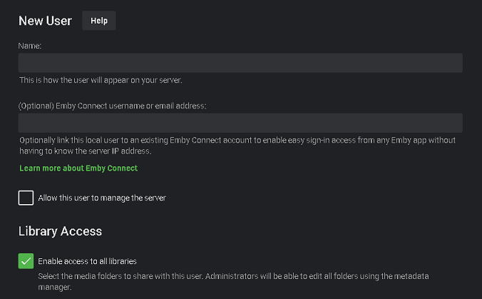

Filename: 'Emby-Connect.md'
uid: Emby-Connect title: Emby Connect legacyUrl: /support/solutions/articles/44001160340-emby-connect seeAlso:
- Emby-Connect-for-Users
Was macht Emby Connect?
Emby Connect ist ein kostenloser optionaler Dienst, der es einer Person ermöglicht, ein einziges Set von Benutzernamen/Passwort-Anmeldedaten zu verwenden, wenn sie auf das Emby-Forum und die Community zugreift sowie auf jeden Emby Server, der für die Anmeldung über Emby Connect eingerichtet ist.
Der Benutzer muss sich nicht mehr die URL oder IP/Port jedes Emby Servers merken, noch muss er sich unterschiedliche Anmeldenamen und Passwörter merken, die auf den verschiedenen Emby Servern eingestellt sind.
Beispiel
Sie haben 2 Brüder und 3 Cousins, die Emby Server betreiben. Sie haben von Ihren Familienmitgliedern Zugang zu jedem Server erhalten. Sie könnten unterschiedliche Benutzernamen auf jedem System haben, z.B. "bob", "sbob", "bobs", "cousin-bob", "lil-bro", usw. Mit Emby Connect müssen Sie sich die Anmeldedaten oder Adressen der einzelnen Server nicht mehr merken, da Sie sich über Emby Connect mit einem zentralen Benutzernamen/Passwort einloggen können.
Anleitung für Administratoren
Sie können Emby Connect nach Belieben für jeden Benutzer verwenden, der es anfordert. Lassen Sie sich von ihnen ihren Emby Connect-Benutzernamen geben, den Sie dann zu ihrem Konto auf Ihrem System hinzufügen, und Ihre Aufgabe ist erledigt. Ihr Emby Server muss so eingerichtet und getestet werden, dass er Internetzugang zu Ihrem Server ermöglicht. Falls dies noch nicht geschehen ist, folgen Sie dem KB-Artikel, um den Fernzugriff vor der Nutzung von Emby Connect Remote Setup zu aktivieren.
Sobald Sie den Fernzugriff eingerichtet haben, können Sie für alle Benutzer ein Konto auf Ihrem System erstellen. Standardmäßig werden sie sich direkt auf Ihrem Server mit dem Benutzernamen und Passwort anmelden, das Sie während der Kontoeinrichtung erstellt haben. Gibt Ihnen ein Benutzer seinen Emby Connect-Benutzernamen, bearbeiten Sie einfach sein Konto auf Ihrem Server und füllen die zweite unten gezeigte Option aus.
Der Benutzer kann sich nun direkt mit den lokalen Anmeldedaten auf dem Server einloggen oder über Emby Connect anmelden.
Klicken Sie in der Server-Admin-Konsole auf das Benutzer-Menü.

Anleitung für Benutzer
Bitte sehen Sie Emby Connect für Benutzer nach.
Bedeutet das, dass mein Streaming durch die Cloud läuft?
Nein, alle Verbindungen sind direkt von Ihren Geräten zu Ihrem Emby Server. Der einzige Zweck der Emby Connect-Funktion besteht darin, Ihren Geräten bei der Lokalisierung Ihres Emby Servers zu helfen, damit Sie ihn nicht selbst einrichten müssen.